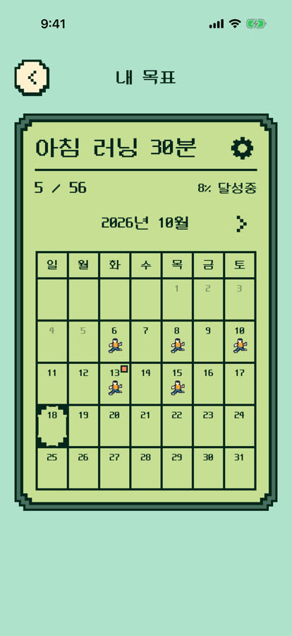
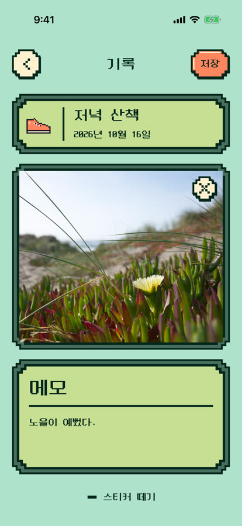
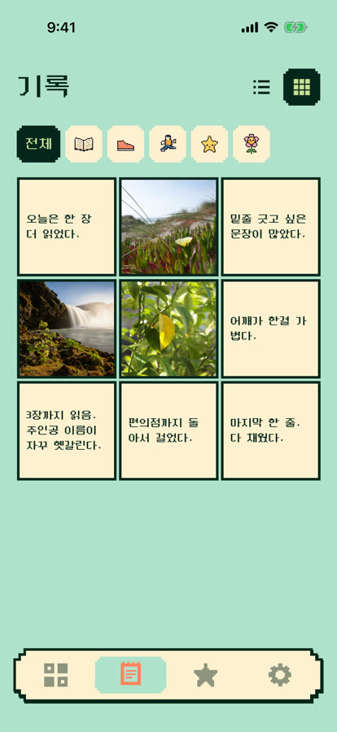
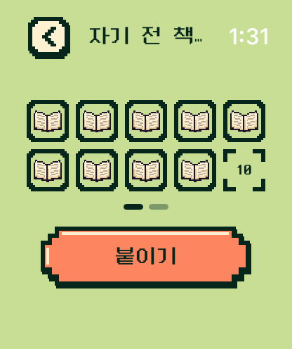

TWO BOARDS
목표에 맞게
판을 골라요
"책 열 권 읽기"처럼 개수를 채우는 목표라면 적립판, "매일 걷기"처럼 날짜가 중요한 목표라면 달력판. 어제 깜빡하고 못 붙였어도 나중에 채우면 돼요.
- 적립판 칸 수를 정해 두고 하나씩 채워요
- 달력판 해낸 날짜에 붙여요. 끝나는 날을 정할 수도 있어요
- 판을 다 채우면 칸을 늘려 계속 이어 갈 수 있어요
자기 전 책 열 쪽, 저녁 산책, 물 한 잔. 해낸 날 빈칸을 톡 누르면 스티커가 붙어요. 못 한 날은 세지 않아요. 붙인 스티커만 차곡차곡 쌓여요.
무료로 받을 수 있어요App Store곧 출시로그인하지 않아도 바로 쓸 수 있어요.
WHY 차곡차곡
끊긴 연속 기록, 낮은 달성률, 자꾸 울리는 알림. 차곡차곡에는 없어요. 어릴 때 냉장고에 붙여 두던 칭찬 스티커판처럼, 해낸 만큼 판이 채워질 뿐이에요.
연속 기록 0일
며칠 쉬었다 돌아와도 그동안 붙인 스티커는 그대로 있어요. 오늘 하나 붙이면 다시 이어져요.
오늘 기록, 잊지 않으셨죠?
알림으로 쫓아오지 않아요. 해낸 날, 생각났을 때 열어서 붙이면 돼요.
이번 주 달성률 42%
등급도 순위도 없어요. 꽉 찬 판을 다시 보는 것만으로 충분히 뿌듯하거든요.
HOW IT WORKS
처음 열어서 판 하나 만드는 데 1분이면 충분해요.

이름을 짓고 마음에 드는 스티커를 골라요. 칸 수를 정하거나 달력으로 둘 수 있어요.

빈칸을 한 번 누르면 끝. 잘못 붙였다면 꾹 눌러 떼면 돼요.

한 달 뒤 꽉 찬 판과 그날의 사진을 넘겨 보면, 내가 해낸 날들이 한눈에 보여요.
TWO BOARDS
"책 열 권 읽기"처럼 개수를 채우는 목표라면 적립판, "매일 걷기"처럼 날짜가 중요한 목표라면 달력판. 어제 깜빡하고 못 붙였어도 나중에 채우면 돼요.

MEMORIES
붙인 스티커를 누르면 그날 사진 한 장과 짧은 메모를 남길 수 있어요. 기록 탭에서는 그동안 남긴 순간을 날짜별로, 또는 사진 모아 보기로 돌아봐요.


WIDGET
목표 하나, 적립판, 이번 달 중에서 마음에 드는 위젯을 홈 화면에 두세요. 휴대폰을 켠 김에 한 번 누르면 스티커가 붙어요. 바탕은 아이보리, 흰색, 먹색 중에서 골라요.
APPLE WATCH
휴대폰을 꺼내지 않아도 돼요. 스티커를 하나 붙일 때마다 차곡이 머리 위에 블록이 하나씩 쌓이고, 세 개가 모이면 차곡이가 보관함에 넣어요.

STICKERS
옛날 게임기 화면 같은 도트 스티커예요. 기본, 동물, 감정 묶음은 무료이고 운동, 간식, 사물, 날씨와 계절 묶음은 따로 열 수 있어요.
잠긴 묶음도 광고를 보면 하루 동안, 스티커 붙인 날이 쌓이면 3일 동안 무료로 써 볼 수 있어요. 판을 채울 때마다 표정으로 반응하는 「차곡이」도 함께해요.
IDEAS
거창하지 않아도 돼요. 작게 정할수록 자주 붙이고, 자주 붙일수록 즐거워요.
PEACE OF MIND
가입하라고 붙잡지 않아요. 그래도 쌓아 온 기록이 사라지지 않게 준비해 뒀어요.
설치하고 바로 써요. 기록은 먼저 내 휴대폰에 저장돼요.
Apple, 카카오, Google 중 하나로 로그인해 두면 붙이고 고칠 때마다 알아서 백업돼요. 새 휴대폰에서도 그대로 돌아와요.
붙인 날짜를 함께 저장해서, 해외에서 열어도 스티커는 붙인 칸 그대로예요.
FAQ
네. 목표 만들기, 적립판과 달력판, 사진과 메모, 위젯, Apple Watch, 백업까지 모두 무료예요. 스티커도 기본, 동물, 감정 묶음은 무료이고, 다른 묶음을 쓰고 싶을 때만 따로 사면 돼요.
목표 목록 아래에 작은 배너 하나만 있어요. 스티커를 붙이는 판과 기록 화면에는 광고가 없어요. 한 번 사면 그 배너도 계속 없앨 수 있어요.
지적하지 않아요. 차곡차곡은 재촉하거나 평가하지 않는 걸 원칙으로 만들었어요. 해낸 날에 들어와서 붙이면 돼요.
앱에서 계정을 연결해 두면 자동으로 백업돼요. 새 휴대폰에서 같은 계정으로 로그인하면 판과 사진이 그대로 돌아와요.
지금 App Store 출시를 준비하고 있어요.
무료로 받을 수 있어요App Store곧 출시궁금한 점이 있다면 고객 지원에 물어봐 주세요.